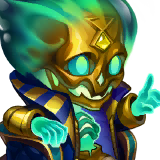
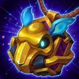
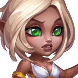

SUPPORTWAY OF ETERNITYMIDDLE LINECONTROLDEBUFF EXTENSION
HERO OVERVIEW
Tempus — The Hero Who Controls the Clock
Tempus is a middle-line Support hero from the Way of Eternity, and the legendary time manipulator of Hero Wars Alliance.
His greatest strength isn't dealing massive damage. It's controlling what happens on the battlefield: stopping enemies, disrupting their abilities, extending debuffs and completely changing the rhythm of battle.
Every one of his four skills scales with Magic Attack, and together they let him influence both sides of the fight at once.
ETERNITYHero faction
SUPPORTPrimary class
MIDDLEBattle line
2.5sChronostasis time stop
Tempus identity: He doesn't need to be your strongest damage dealer. He gives your damage dealers the time and the openings they need to win.
HERO KIT
Tempus — All Four Skills Explained
Chronostasis stops the enemy team, Withering weakens their attackers, Temporal Anomaly traps their most dangerous physical hero, and Time Paradox bends the pace of the battle in his team's favour.
Chronostasis
Tempus stops time for all enemy heroes for two and a half seconds.
During this period enemies cannot move, use skills or dodge attacks. Their Armor and Magic Defense are reduced, and their skill cooldowns are frozen.
Chronostasis also extends the duration of all curses and debuffs affecting enemies.
Two and a half seconds might sound insignificant, but think about what happens during that time. Dodge-based teams temporarily lose their ability to avoid attacks, creating openings for damage dealers like Xe'Sha and Cascade. Enemy abilities are delayed, disrupting their timing and potentially preventing important defensive reactions.
Strategic advantage: The Armor and Magic Defense reductions count as separate debuffs, so Iris can benefit enormously. Add the extension of existing negative effects, and Chronostasis becomes one of Tempus's most valuable tools.
Withering
Tempus weakens distant enemies in front of him for six seconds, reducing their Physical Attack and maximum Health.
This ability is particularly troublesome for physical damage dealers. Lower Physical Attack directly weakens their offensive pressure, while lower maximum Health interferes with heroes who rely on large Health pools. Kayla is one example worth considering.
Core mechanic: 6s Physical Attack + maximum Health reduction
Strategic advantage: Because Withering applies negative effects, it also creates opportunities for teammates who benefit from debuffs.
Temporal Anomaly
Tempus targets the enemy hero with the highest Armor Penetration, trapping them in a Temporal Anomaly for five seconds.
During this period the target is slowed by 25%, loses 50 Energy and takes Magic Damage every second.
Core mechanic: 5s trap · 25% slow · −50 Energy · Magic Damage every second
Strategic advantage: Especially useful against physical attackers who rely on Armor Penetration. Tempus doesn't simply damage them, he reduces their speed and Energy. When that target is an important damage dealer, those five seconds can make a real difference.
Time Paradox
Tempus summons a massive Clock in the center of the battlefield for four seconds.
Enemies within its range are slowed, while allies receive a 10% speed increase. Affected allies also gain additional maximum Health.
Core mechanic: Enemy slow + 10% allied speed + allied maximum Health
This is where Tempus becomes more than a control specialist: he's manipulating both sides of the battlefield simultaneously. Enemies become slower while allies become faster and harder to eliminate.
Strategic advantage: The maximum Health increase can create interesting interactions with heroes like Aidan, Astaroth and Xe'Sha. Combined with Chronostasis, Time Paradox lets Tempus set the pace of an entire battle.
Understanding Tempus: Chronostasis stops the enemy and extends debuffs, Withering weakens physical attackers, Temporal Anomaly shuts down their best Armor Penetration hero, and Time Paradox speeds up and strengthens his own team.
TEMPUS RELIC SYSTEM
Way of Tempus' Relic — Four Upgrades
Tempus' Relic adds two brand-new abilities and strengthens two of his existing skills. It also raises his Magic Attack and Health at every level, making him both stronger and harder to remove.
30Relic levels
+57,005Magic Attack at max level
+290,824Health at max level
2,880Tempus Relic Shards to max
RELIC UPGRADE 1 · NEW SKILL
Chrono Field
At regular intervals Tempus creates an aura around himself, increasing Magic Penetration for him and every ally standing inside it.
This turns Tempus from a pure controller into a damage amplifier for magical teams. Allies such as Iris benefit twice: from his debuffs, and from hitting through more of the enemy's Magic Defense.
Core mechanic: Repeating aura · Magic Penetration for Tempus and nearby allies
RELIC UPGRADE 2
Withering — Hits the Whole Front
Withering now also debuffs all enemies in front of him, not only the distant targets.
More enemies lose Physical Attack and maximum Health at once, and every extra debuff gives Iris and other debuff-hungry partners more to work with.
Upgrade: Physical Attack and maximum Health reduction on all enemies in front
LEGENDARY RELIC · UPGRADE 3
Time Paradox — Damaging Clock
The Clock now deals Magic Damage to every enemy in the skill's area at regular intervals.
Time Paradox already slows enemies while speeding up and protecting allies. With this upgrade it also wears the enemy down for as long as they stand near the Clock.
Upgrade: Repeated Magic Damage inside the Clock's area
LEGENDARY RELIC · UPGRADE 4 · NEW SKILL
Time Rebound
When an enemy hits Tempus with a Control effect, that enemy is put into Chronostasis.
This answers the main way to stop Tempus: Silence and other control. The hero who tries to shut him down is frozen in time for their trouble.
Core mechanic: Control Tempus → get Chronostasis back
Unlocking the Relic: The first Relic level needs Tempus at 4 stars and level 50. Level 10 needs 6 stars and a higher hero rank, and level 20 needs a higher rank again. The descriptions above come from the game itself; this section is not covered by the video.
SURVIVE FIRST, THEN SCALE
Tempus — Best Skin Priority
Tempus needs to survive long enough to activate his abilities again and again. Our priority is simple: keep Tempus alive, then strengthen the abilities that make him valuable.
1
Lunar Skin
Health. Our first priority. Tempus cannot control the battlefield if he's eliminated early, so additional Health is extremely important.
2
Stellar Skin
Magic Attack. Strengthens every one of his skill effects, making his control and support abilities more effective.
3
Cybernetic Skin
Magic Attack. A second Magic Attack skin for even stronger skill scaling.
4
Default Skin
Intelligence. His primary attribute, improving both Magic Attack and Magic Defense.
5
Angel Skin (also Skin+)
Armor. Helps Tempus survive against physical attackers.

6
Jade Flames Skin
Magic Defense. Additional protection against magical damage.
GOA development priority: Health → Magic Attack → Magic Attack → Intelligence → Armor → Magic Defense.
STAT INVESTMENT
Glyphs — Recommended Upgrade Order
1
Magic Attack
Comes first because it strengthens the scaling of all four of his skills.
2
Health
Tempus cannot control the battlefield if he's eliminated too early.
3
Intelligence
Provides additional Magic Attack and Magic Defense.
4
Magic Defense
Protection against Mages trying to remove him before his control lands.
5
Armor
Becomes particularly useful when facing dangerous physical teams.
Initial recommendation: Bring all five Glyphs to Level 40 before investing further, unless you're pursuing skill-class progression.
ARTIFACT DEVELOPMENT
Artifacts — Best Investment Priority
Develop Tempus himself first. His Weapon's team bonus is useful, but his own Magic Attack and survivability come before it.
1. Artifact Book
Magic Attack & Health.
Our first priority. The combination improves both his abilities and his survivability.
2. Artifact Ring
Intelligence.
Strengthens his main attribute.
3. Artifact Weapon
Teamwide Magic Attack.
When Tempus activates Chronostasis, his Weapon gives the whole team a Magic Attack bonus. It remains useful, especially in magical compositions.
Recommended order: Book → Ring → Weapon.
CORE ATTRIBUTES
Gift of the Elements
Recommended Investment — Maximum
Maximize Gift of the Elements as your resources allow.
Tempus is a middle-line Support hero, and his performance depends on surviving long enough to influence the battle. Every additional investment in his overall development helps him perform that role more consistently.
ADVANCED HERO DEVELOPMENT
Tempus — Talisman Comparison
Both Talismans are excellent options. One combines offensive scaling with physical protection, the other focuses directly on survivability.

First Talisman
Main attribute: Intelligence.
Additional attribute: Armor.
Combines stronger skill scaling with protection against physical attackers.
GOA recommendation: If Tempus is frequently eliminated before he activates his important abilities, the Toughness and Health Talisman deserves particular attention.
ETERNITY INTERACTIONS
Tempus — Hero Synergies
Tempus applies debuffs, extends their duration and reduces enemy defenses. One hero stands out immediately.
Iris — The Standout Partner
Chronostasis can help Iris accumulate Pure Soul charges, while extended debuffs allow Inner Fire to remain active for longer.
And because Tempus belongs to the Way of Eternity, his debuffs can trigger stronger Inner Fire charges.
Key advantage: This makes their combination particularly dangerous.
Corvus — Eternity Frontline
Provides frontline protection and contributes additional Eternity debuffs.
Phobos — More Control
Adds control and further negative effects alongside Tempus's own.
Xe'Sha & Cascade — Punishing the Opening
Both can exploit the moment enemies temporarily lose their ability to dodge during Chronostasis.
Remember: The best Tempus team isn't necessarily the one with the most control heroes. You still need enough damage and survivability to finish the battle.
COUNTER STRATEGY
How to Counter Tempus
The objective is to stop Tempus before Chronostasis changes the battle.
DEBUFF PUNISHMENT
Iris
Tempus frequently applies buffs and debuffs, and Iris can punish enemy debuff applications through her abilities. That makes her an interesting option against him too.
SILENCE
Crow
Silence can prevent Tempus from using his active abilities, disrupting his control sequence.
SILENCE
Mushy & Shroom
Their Silence creates opportunities to attack before Tempus activates his most important skills.
SILENCE

Thea & Keira
Additional options to consider when their Silence mechanics can interfere with his abilities.
Timing is essential: If Tempus has already activated his control effects, applying Silence afterwards won't automatically reverse everything. And against a Tempus with the full Relic, Time Rebound puts any hero who controls him into Chronostasis, so Silence comes at a price.
GODS OF ALLIANCE ANALYSIS
Final Verdict — The Master of Time
Tempus is one of the most interesting Support heroes in Hero Wars Alliance because he influences almost every aspect of combat.
Chronostasis: Stops enemies and extends debuffs.
Withering: Reduces Physical Attack and maximum Health.
Temporal Anomaly: Disrupts an important physical attacker.
Time Paradox: Changes movement speed while strengthening allied maximum Health.
Relic: Adds team Magic Penetration (Chrono Field), wider Withering, a damaging Clock, and Time Rebound against control.
For his build, prioritize survivability and Magic Attack. For team synergy, Iris is one of his most valuable partners. And when facing him, look for opportunities to interrupt his active abilities before his control effects take over.
GOA recommendation: Tempus doesn't need to be your strongest damage dealer. He simply needs to give your damage dealers the time and opportunities they need to win.
VIDEO GUIDE & BATTLE ANALYSIS
Watch — Tempus Complete Hero Guide
Watch the Gods of Alliance analysis covering Tempus's skills, Relic, development priorities, team examples and battle testing.